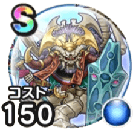

暗黒皇帝ガナサダイ
よみがえれ天の箱舟こころ最大コスト+4スキルの斬撃ダメージ+10%ドルマ属性斬撃・体技ダメージ+10%混乱耐性+7%怯え耐性+7%【ゴドハン】ゴッドレイジ威力アップ+10%【ニンジャ】威圧状態の相手へのダメージ+10% / 8.5点
くわしい特徴
【ランク特殊効果】 こころ最大コスト+4スキルの斬撃ダメージ+10%ドルマ属性斬撃・体技ダメージ+10%混乱耐性+7%怯え耐性+7%【ゴドハン】ゴッドレイジ威力アップ+10%【ニンジャ】威圧状態の相手へのダメージ+10%